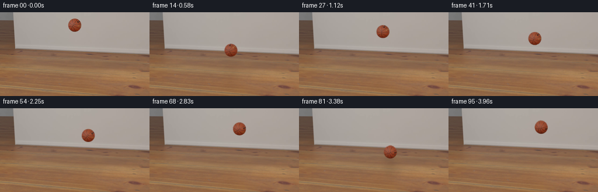
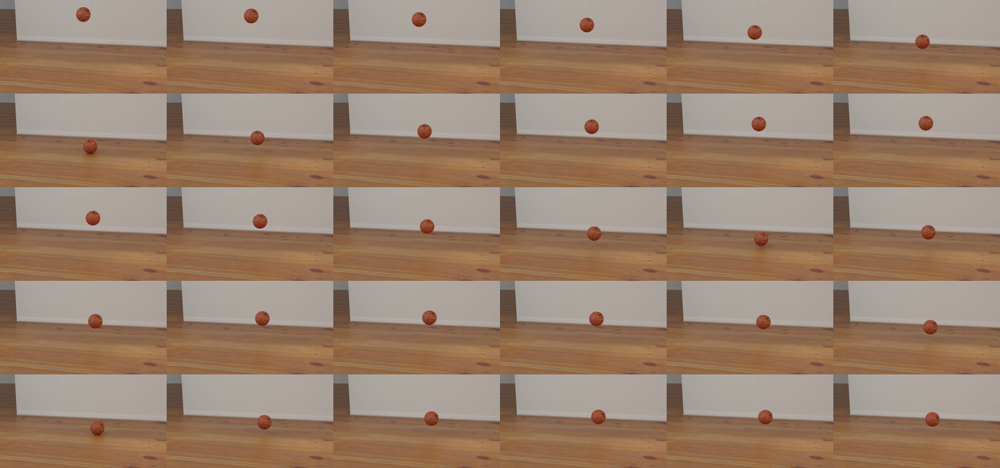
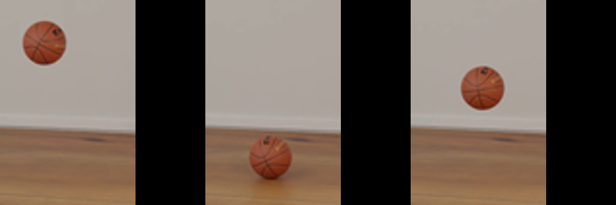
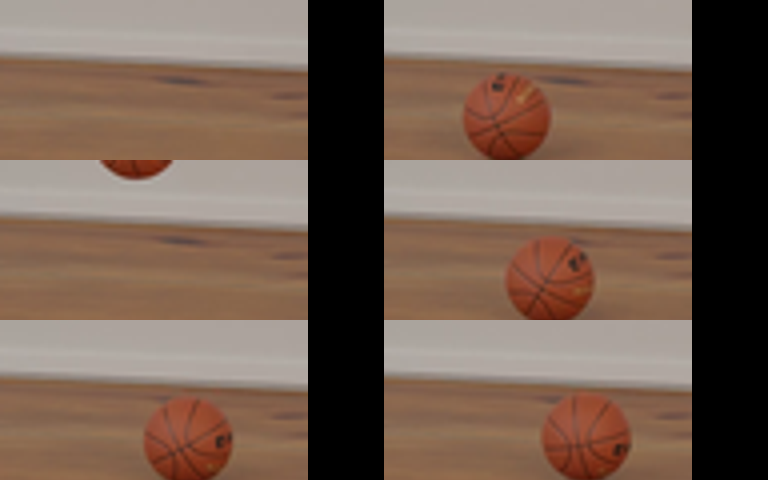
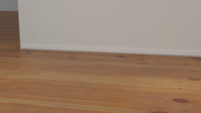
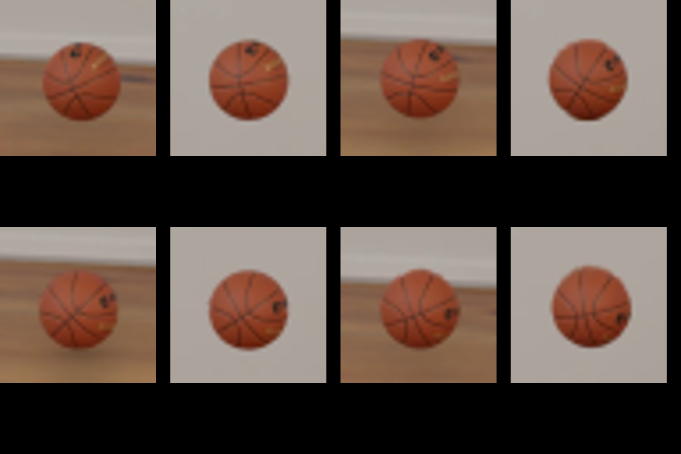
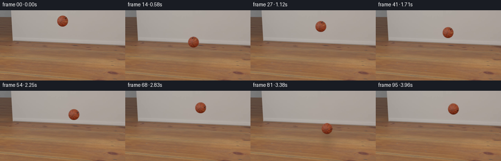

CODING AGENTS AS PIXEL WORLD MODELS
traex/GPT-6.1-Sol · pcve_0029
点击播放 · 原生 RGB 像素
编辑前的完整原视频
上方为编辑结果；原视频是模型获准使用的输入。下方为逐轮保存的编辑候选。
逐轮保存的候选
回放视频、检查图与代码变化。
每份候选均可单独播放。实际图片检查记录在下方工具轨迹中。
候选 01播放与检查图
点击播放 · 原生 RGB 像素

展开代码变化
--- 上一保存版本
+++ 本次保存版本
@@ -0,0 +1,178 @@
+from pathlib import Path
+import cv2
+import numpy as np
+from PIL import Image
+from scipy.optimize import least_squares
+from scipy.ndimage import gaussian_filter, map_coordinates
+import artifact_io
+
+ROOT = Path(__file__).resolve().parent
+
+def main():
+ src = np.load(ROOT / 'source_pixels.npz')['rgb']
+ n, H, W, _ = src.shape
+ Y, X = np.indices((H, W))
+ # All mattes, texture samples, and measured positions come from this source.
+ high = []
+ capture = cv2.VideoCapture(str(ROOT / 'source_video.mp4'))
+ for i in range(n):
+ ok, bgr = capture.read()
+ if not ok:
+ raise RuntimeError('Incomplete source video')
+ high.append(cv2.cvtColor(bgr, cv2.COLOR_BGR2RGB))
+ capture.release()
+ high = np.asarray(high)
+ S = high.shape[2] / W
+ hy, hx = np.indices(high.shape[1:3])
+ track = []
+ for i in range(n):
+ a = src[i].astype(float)
+ mask = ((a[...,0]-a[...,1]) > 45) & (X>110) & (X<175) & (Y<98)
+ num, labs, stats, cents = cv2.connectedComponentsWithStats(mask.astype(np.uint8))
+ j = 1 + np.argmax(stats[1:, cv2.CC_STAT_AREA])
+ x,y = cents[j]*S
+ a = high[i].astype(float)
+ m = (((a[...,0]-a[...,1]) > 42) & ((hx-x)**2+(hy-y)**2 < (12.4*S)**2)).astype(np.uint8)
+ contours,_ = cv2.findContours(m, cv2.RETR_EXTERNAL, cv2.CHAIN_APPROX_NONE)
+ points = max(contours, key=len)[:,0,:]
+ result = least_squares(lambda p: np.linalg.norm(points-p[:2],axis=1)-p[2], [x,y,11*S])
+ track.append(result.x/S)
+ track = np.asarray(track)
+
+ # Remove the initial airborne ball only; frame zero has a clean floor.
+ bg = src[0].astype(float).copy()
+ initial_mask = (X-track[0,0])**2+(Y-track[0,1])**2 < (track[0,2]+2)**2
+ median = np.median(src[15:], axis=0)
+ bg[initial_mask] = median[initial_mask]
+ bg_hr = cv2.resize(bg, (high.shape[2],high.shape[1]), interpolation=cv2.INTER_CUBIC)
+
+ # Fit the first fall and subsequent free-flight arcs. Restitution is the
+ # outgoing / incoming normal-speed ratio, not a multiplier on gravity.
+ segments = [(0,12),(13,32),(33,49),(49,62),(63,74),(74,82)]
+ arcs = [np.polyfit(np.arange(lo,hi), track[lo:hi,1],2) for lo,hi in segments]
+ roots = np.roots(arcs[0]-arcs[1])
+ impact = float(next(r.real for r in roots if abs(r.imag)<1e-6 and 10<r.real<14))
+ floor0 = float(np.polyval(arcs[0],impact))
+ g = 2*arcs[0][0]
+ vin = float(np.polyval(np.polyder(arcs[0]),impact))
+ first_vout = -float(np.polyval(np.polyder(arcs[1]),impact))
+ coefficients = [first_vout/vin]
+ for j in range(1,len(arcs)-1):
+ rr = np.roots(arcs[j]-arcs[j+1])
+ target = segments[j][1]
+ ti = min((r.real for r in rr if abs(r.imag)<1e-5), key=lambda r:abs(r-target))
+ incoming = np.polyval(np.polyder(arcs[j]),ti)
+ outgoing = -np.polyval(np.polyder(arcs[j+1]),ti)
+ coefficients.append(float(outgoing/incoming))
+ # Measured slow horizontal drift is largely unchanged by the normal impulse.
+ tfit = np.arange(13,n)-impact
+ drift = least_squares(lambda p:p[0]+p[1]*(1-np.exp(-p[2]*tfit))/p[2]-track[13:,0],
+ [138.6,.36,.0107]).x
+ x0,vx,drag = drift
+ def xpos(t):
+ dt=max(0.,t-impact)
+ return x0+vx*(-np.expm1(-drag*dt))/drag
+ def ground(t):
+ # Slight screen-space inclination from the perspective camera.
+ return floor0+.022*(xpos(t)-xpos(impact))
+ events=[]
+ tb=impact
+ vout=first_vout*1.2
+ k=1
+ while tb<n:
+ events.append((tb,vout,ground(tb)))
+ # Solve flight-to-contact against the very slightly sloped image plane.
+ tf=tb+2*vout/g
+ for _ in range(4):
+ d=tf-tb
+ res=ground(tb)-vout*d+.5*g*d*d-ground(tf)
+ tf-=res/max(1.,-vout+g*d)
+ v_in=-vout+g*(tf-tb)
+ e=coefficients[min(k,len(coefficients)-1)]*1.2
+ vout=v_in*e
+ tb=tf
+ k+=1
+ positions=[]
+ for i in range(n):
+ if i<=12:
+ positions.append(track[i,:2])
+ else:
+ tb,v,fl=max((e for e in events if e[0]<=i),key=lambda e:e[0])
+ dt=i-tb
+ positions.append([xpos(i),fl-v*dt+.5*g*dt*dt])
+ positions=np.asarray(positions)
+
+ # Source-calibrated broad contact shadow, fitted only in unobscured floor.
+ obs=[]; coords=[]
+ for i in range(13):
+ xx,yy,rad=track[i]
+ valid=((X-xx)**2+(Y-yy)**2>(rad+2)**2)&(Y>=75)&(Y<130)&(X>95)&(X<192)
+ ratio=np.mean((bg-src[i].astype(float))/np.maximum(bg,25),axis=2)
+ coords.append(np.array([X[valid]-xx,Y[valid],np.full(valid.sum(),max(0.,floor0-yy))]))
+ obs.append(ratio[valid])
+ coordinates=np.concatenate(coords,axis=1); observations=np.concatenate(obs)
+ dx,ys,ht=coordinates
+ def shadow_model(p, dx, yy, ht):
+ amp,ox,cy,sx,sy,fade=p
+ return amp*np.exp(-ht/fade)*np.exp(-.5*((dx-ox)/(sx+.09*ht))**2-.5*((yy-cy)/(sy+.06*ht))**2)
+ shadowfit=least_squares(lambda p:shadow_model(p,dx,ys,ht)-observations,
+ [.23,1,93,11,10,9],bounds=([.02,-8,85,5,4,2],[.5,10,105,25,22,24]),loss='soft_l1',f_scale=.025).x
+ print('First collision:',impact,'normal e:', coefficients,'modified:',np.asarray(coefficients)*1.2)
+ print('Shadow calibration:',shadowfit)
+ print('Counterfactual collision times:',[round(t/24,3) for t,_,_ in events])
+
+ frames=[]
+ for i in range(n):
+ if i<=12:
+ frames.append(src[i].copy())
+ continue
+ x,y=positions[i]
+ h=max(0.,ground(i)-y)
+ shadow=shadow_model(shadowfit,X-x,Y-.022*(x-xpos(impact)),h)
+ contact=.16*np.exp(-h/2.5)*np.exp(-.5*((X-x)/6)**2-.5*((Y-(ground(i)+11.2))/1.25)**2)
+ shadow=np.clip(shadow+contact,0,.55)
+ shadow*=np.clip((Y-70)/3,0,1)
+ scene=bg*(1-shadow[...,None])
+ scene=cv2.resize(scene,(high.shape[2],high.shape[1]),interpolation=cv2.INTER_CUBIC)
+ # Follow the original texture's rotation in real time. A high-resolution
+ # edge matte is recovered from contrast against the clean source plate.
+ cx,cy,rad=track[i]*S
+ rr=int(np.ceil(rad+5))
+ left=int(np.floor(cx))-rr; top=int(np.floor(cy))-rr
+ patch=high[i,top:top+2*rr+1,left:left+2*rr+1].astype(float)
+ ph,pw=patch.shape[:2]
+ py,px=np.indices((ph,pw));dd=np.sqrt((px+left-cx)**2+(py+top-cy)**2)
+ back=bg_hr[top:top+ph,left:left+pw].copy()
+ # Correct the floor background for the source's own contact shadow.
+ oldht=max(0.,ground(i)-track[i,1])
+ oldsh=shadow_model(shadowfit,(px+left)/S-track[i,0],(py+top)/S,oldht)
+ back*=1-oldsh[...,None]
+ inward=np.maximum(0.,rad-4)/np.maximum(dd,1e-6)
+ ix=(cx-left)+(px+left-cx)*inward
+ iy=(cy-top)+(py+top-cy)*inward
+ edge=np.stack([map_coordinates(patch[...,ch],[iy,ix],order=1,mode='nearest') for ch in range(3)],axis=2)
+ delta=edge-back
+ alpha=np.sum((patch-back)*delta,axis=2)/np.maximum(np.sum(delta*delta,axis=2),100.)
+ alpha=np.clip(alpha,0,1)
+ alpha[dd<rad-2.7]=1
+ alpha[dd>rad+2.7]=0
+ alpha[alpha<.05]=0
+ col=(patch-back*(1-alpha[...,None]))/np.maximum(alpha[...,None],.05)
+ col=np.clip(col,0,255)
+ premult=col*alpha[...,None]
+ M=np.float32([[1,0,x*S-cx+left],[0,1,y*S-cy+top]])
+ # Composite with subpixel accuracy before the final area downsample.
+ aa=cv2.warpAffine(alpha.astype(np.float32),M,(scene.shape[1],scene.shape[0]),flags=cv2.INTER_LINEAR)
+ fg=cv2.warpAffine(premult.astype(np.float32),M,(scene.shape[1],scene.shape[0]),flags=cv2.INTER_LINEAR)
+ scene=scene*(1-aa[...,None])+fg
+ frame=cv2.resize(scene,(W,H),interpolation=cv2.INTER_AREA)
+ frames.append(np.clip(np.rint(frame),0,255).astype(np.uint8))
+ frames=np.asarray(frames,dtype=np.uint8)
+ artifact_io.save(frames,ROOT)
+ # A conventional MP4 companion to the required RGB and browser artifacts.
+ writer=cv2.VideoWriter(str(ROOT/'edited_video.mp4'),cv2.VideoWriter_fourcc(*'mp4v'),24,(W,H))
+ for fr in frames: writer.write(cv2.cvtColor(fr,cv2.COLOR_RGB2BGR))
+ writer.release()
+
+if __name__=='__main__':
+ main()
候选 02播放与检查图
点击播放 · 原生 RGB 像素

展开代码变化
--- 上一保存版本
+++ 本次保存版本
@@ -75,6 +75,10 @@
def ground(t):
# Slight screen-space inclination from the perspective camera.
return floor0+.022*(xpos(t)-xpos(impact))
+ # Use one constant material restitution. The small variation in measured
+ # source speed ratios is from discretized contact timing; it must not
+ # turn into a time-varying restitution or an energy-gaining bounce.
+ restitution = float(np.median(coefficients[1:])) * 1.2
events=[]
tb=impact
vout=first_vout*1.2
@@ -88,8 +92,7 @@
res=ground(tb)-vout*d+.5*g*d*d-ground(tf)
tf-=res/max(1.,-vout+g*d)
v_in=-vout+g*(tf-tb)
- e=coefficients[min(k,len(coefficients)-1)]*1.2
- vout=v_in*e
+ vout=v_in*restitution
tb=tf
k+=1
positions=[]
候选 03播放与检查图
点击播放 · 原生 RGB 像素

展开代码变化
代码未变化；重新保存了产物。
可观测工具轨迹
实际执行的命令与返回图片。
命令 1exit 0
/bin/bash -lc "ls -la && cat prompt.txt && printf '\\n--- RULES ---\\n' && cat GENERATION_RULES.md"
命令 2exit 0
/bin/bash -lc 'cat source_info.json && cat task_spec.json && cat artifact_io.py'
命令 3exit 0
/bin/bash -lc "python - <<'PY'
import numpy as np
from PIL import Image
z=np.load('source_pixels.npz'); print([(k,z[k].shape,z[k].dtype) for k in z])
f=z[z.files[0]]; a=f.astype(float)
import scipy.ndimage as nd
for i,fr in enumerate(a):
m=(fr[:,:,0]>fr[:,:,1]*1.32)&(fr[:,:,1]>fr[:,:,2]*1.1)&(fr[:,:,0]>75)&(np.indices(fr.shape[:2])[0]<110)
lab,n=nd.label(m); objs=nd.find_objects(lab)
sizes=nd.sum(m,lab,range(1,n+1)); j=np.argmax(sizes)+1
yy,xx=np.where(lab==j)
if i%1==0: print(i,round(xx.mean(),3),round(yy.mean(),3),xx.min(),xx.max(),yy.min(),yy.max(),len(xx))
Image.fromarray(np.median(f,axis=0).astype(np.uint8)).save('background_estimate.png')
PY"命令 4exit 0
/bin/bash -lc "python - <<'PY'
import numpy as np
from PIL import Image
import scipy.ndimage as nd
f=np.load('source_pixels.npz')['rgb'];Y,X=np.indices(f.shape[1:3]); centers=[]
for i,fr in enumerate(f):
a=fr.astype(float);m=(a[:,:,0]-a[:,:,1]>45)&(a[:,:,0]>90)&(X>110)&(X<176)&(Y<98)
lab,n=nd.label(m); sizes=nd.sum(m,lab,range(1,n+1));j=np.argmax(sizes)+1; yy,xx=np.where(lab==j)
c=[(xx.min()+xx.max())/2,(yy.min()+yy.max())/2];centers.append(c)
print(i,c, (xx.min(),xx.max(),yy.min(),yy.max()),len(xx))
np.save('centers.npy',centers)
s=Image.new('RGB',(256*6,144*5));
for j,i in enumerate(range(0,60,2)):
s.paste(Image.fromarray(f[i]),((j%6)*256,(j//6)*144))
s.save('analysis_sheet.png')
PY"命令 5exit 0
/bin/bash -lc "python - <<'PY'
import numpy as np
c=np.load('centers.npy'); segs=[(0,12),(13,32),(33,49),(49,62),(63,74),(74,82),(83,90)]
for lo,hi in segs:
x=np.arange(lo,hi);y=c[lo:hi,1];p=np.polyfit(x-lo,y,2);print(lo,hi,'p',p,'g',p[0]*2,'apex',lo-p[1]/(2*p[0]),np.polyval(p,-p[1]/(2*p[0])))
PY"命令 6exit 0
/bin/bash -lc "python - <<'PY'
import numpy as np
from scipy.optimize import least_squares
c=np.load('centers.npy');t=np.arange(96); y=c[:,1]
segs=[(0,12),(13,32),(33,49),(49,62),(63,74),(74,82)]
# common quadratic g while independent segment linear/constant
A=[];b=[]
for j,(lo,hi) in enumerate(segs):
for k in range(lo,hi):
a=np.zeros(1+2*len(segs));a[0]=.5*k*k;a[1+2*j]=k;a[2+2*j]=1;A.append(a);b.append(y[k])
p=np.linalg.lstsq(A,b,rcond=None)[0];g=p[0];print('g',g)
for j,(lo,hi) in enumerate(segs):
print('seg',lo,hi,p[1+2*j:3+2*j])
for j in range(1,len(segs)):
v0,c0=p[2*j-1:2*j+1];v1,c1=p[2*j+1:2*j+3];tb=(c0-c1)/(v1-v0);yf=.5*g*tb*tb+v0*tb+c0
print('impact',tb,'floor',yf,'e',-(g*tb+v1)/(g*tb+v0))
PY"命令 7exit 0
/bin/bash -lc "python - <<'PY'
import cv2
print(cv2.__version__)
v=cv2.VideoCapture('source_video.mp4');ok,fr=v.read(); print(ok,fr.shape)
PY"命令 8exit 0
/bin/bash -lc "python - <<'PY'
import cv2,numpy as np
from PIL import Image
f=np.load('source_pixels.npz')['rgb'];
c=np.load('centers.npy');v=cv2.VideoCapture('source_video.mp4');cc=[]
for i in range(96):
ok,bgr=v.read();a=cv2.cvtColor(bgr,cv2.COLOR_BGR2RGB).astype(float);Y,X=np.indices(a.shape[:2]);x,y=c[i]*5
m=(a[:,:,0]-a[:,:,1]>43)&((X-x)**2+(Y-y)**2<60**2)
yy,xx=np.where(m);cc.append([(xx.min()+xx.max())/10,(yy.min()+yy.max())/10,(xx.max()-xx.min()+1)/10,(yy.max()-yy.min()+1)/10])
print(np.array(cc));np.save('centers_hr.npy',cc)
# illustrate enlarged 0 12 22
s=Image.new('RGB',(768,480))
for j,i in enumerate([0,12,22]):
im=Image.fromarray(f[i]);s.paste(im.resize((512,288)),(0,j*160));
# crops
s=Image.new('RGB',(900,300))
for j,i in enumerate([0,12,22]):s.paste(Image.fromarray(f[i]).crop((105,0,175,106)).resize((198,300)),(j*300,0))
s.save('crops.png')
PY"命令 9exit 0
/bin/bash -lc "python - <<'PY'
import cv2,numpy as np
from scipy.optimize import least_squares
f=cv2.cvtColor(cv2.VideoCapture('source_video.mp4').read()[1],cv2.COLOR_BGR2RGB)
y,x=np.indices(f.shape[:2]);m=(((f[:,:,0].astype(float)-f[:,:,1])>40)&((x-640)**2+(y-110)**2<65**2)).astype('uint8')
conts,_=cv2.findContours(m,cv2.RETR_EXTERNAL,cv2.CHAIN_APPROX_NONE);pts=max(conts,key=len)[:,0,:];fit=least_squares(lambda p:np.sqrt(((pts-p[:2])**2).sum(1))-p[2],[639,111,55]);print(fit.x,fit.fun.std(),pts.min(0),pts.max(0));
PY"命令 10exit 0
/bin/bash -lc "python - <<'PY'
import numpy as np,cv2
from PIL import Image
f=np.load('source_pixels.npz')['rgb'];s=Image.new('RGB',(768,480))
for j,i in enumerate([0,12,22,48,73,95]):
s.paste(Image.fromarray(f[i]).crop((108,52,185,112)).resize((308,240)),((j%2)*384,(j//2)*160))
s.save('shadow_analysis.png')
f0=cv2.VideoCapture('source_video.mp4').read()[1];Image.fromarray(cv2.cvtColor(f0,cv2.COLOR_BGR2RGB)).save('hr_first.png')
PY"命令 11exit 0
/bin/bash -lc "python - <<'PY'
import cv2, numpy as np
from scipy.optimize import least_squares
from PIL import Image
v=cv2.VideoCapture('source_video.mp4'); cs=[]
for i in range(96):
ok,f=v.read();a=cv2.cvtColor(f,cv2.COLOR_BGR2RGB); pred=np.load('centers_hr.npy')[i,:2]*5
y,x=np.indices(a.shape[:2]);m=(((a[:,:,0].astype(float)-a[:,:,1])>42)&((x-pred[0])**2+(y-pred[1])**2<62**2)).astype('uint8')
conts,_=cv2.findContours(m,cv2.RETR_EXTERNAL,cv2.CHAIN_APPROX_NONE); pts=max(conts,key=len)[:,0,:]; fit=least_squares(lambda p:np.sqrt(((pts-p[:2])**2).sum(1))-p[2],[*pred,55]);cs.append(fit.x/5)
cs=np.array(cs); np.save('circle_tracks.npy',cs);print(cs[:15]);
segs=[(0,12),(13,32),(33,49),(49,62),(63,74),(74,82)];A=[];b=[]
for j,(lo,hi) in enumerate(segs):
for k in range(lo,hi):
a=np.zeros(1+2*len(segs));a[0]=.5*k*k;a[1+2*j]=k;a[2+2*j]=1;A.append(a);b.append(cs[k,1])
p=np.linalg.lstsq(A,b,rcond=None)[0];g=p[0];print('g',g,'coeff',p)
for j in range(1,len(segs)):
v0,c0=p[2*j-1:2*j+1];v1,c1=p[2*j+1:2*j+3];tb=(c0-c1)/(v1-v0);yf=.5*g*tb*tb+v0*tb+c0
print('impact',tb,'floor',yf,'e',-(g*tb+v1)/(g*tb+v0))
PY"命令 12exit 0
/bin/bash -lc "python - <<'PY'
import numpy as np
c=np.load('circle_tracks.npy');
for a,b in [(0,12),(13,32)]:
p=np.polyfit(np.arange(a,b),c[a:b,1],2); print(a,p,'g',2*p[0])
p0=np.polyfit(np.arange(12),c[:12,1],2);p1=np.polyfit(np.arange(13,32),c[13:32,1],2); roots=np.roots(p0-p1);print('intersection',roots)
for ti in roots:
if 10<ti<14: print('impact',ti, np.polyval(p0,ti),'v1',np.polyval(np.polyder(p1),ti),'v0',np.polyval(np.polyder(p0),ti))
PY"命令 13exit 0
/bin/bash -lc "python - <<'PY'
import numpy as np
from PIL import Image
f=np.load('source_pixels.npz')['rgb'].astype(float);c=np.load('circle_tracks.npy');Y,X=np.indices(f.shape[1:3]);m=(X[None]-c[:,0,None,None])**2+(Y[None]-c[:,1,None,None])**2<(c[:,2,None,None]+2)**2
vals=np.where(m[:,:,:,None],np.nan,f);bg=np.nanmedian(vals,axis=0); hi=np.nanpercentile(vals,85,axis=0)
# shadow region
q=np.exp(-((X-145)/34)**8-((Y-94)/21)**8);q[Y<72]=0
bg=bg*(1-q[:,:,None])+hi*q[:,:,None];bg=np.where(np.isfinite(bg),bg,f[0]);Image.fromarray(bg.astype(np.uint8)).save('clean_test.png')
for i in [0,12,22,48,95]:
x=c[i,0];
yy,xx=np.indices((144,256)); reg=(abs(xx-x)<25)&(yy>88)&(yy<110)
diff=(bg-f[i]).mean(2);print(i,[(y,round(diff[y,round(x)],1)) for y in range(90,106)],'max',diff[reg].max())
# enlarged clean and ground frame12
s=Image.new('RGB',(800,320));s.paste(Image.fromarray(bg.astype(np.uint8)).crop((100,65,200,105)).resize((800,320)));s.save('clean_crop.png')
PY"命令 14exit 0
/bin/bash -lc "python - <<'PY'
import cv2,numpy as np
f=np.load('source_pixels.npz')['rgb'];v=cv2.VideoCapture('source_video.mp4');a=cv2.cvtColor(v.read()[1],cv2.COLOR_BGR2RGB)
for meth in [cv2.INTER_AREA,cv2.INTER_LINEAR,cv2.INTER_CUBIC]:
r=cv2.resize(a,(256,144),interpolation=meth);print(meth,abs(r.astype(float)-f[0]).mean(),np.percentile(abs(r.astype(float)-f[0]),[50,90,99]))
PY"命令 15exit 0
/bin/bash -lc "python - <<'PY'
import numpy as np
from scipy.optimize import least_squares
c=np.load('circle_tracks.npy');t=np.arange(90)
def sim(p,t):
g,v0,y0,floor,e=p;tb=(-v0+np.sqrt(v0*v0+2*g*(floor-y0)))/g;vel=-(v0+g*tb)*e;r=y0+v0*t+.5*g*t*t
while tb<=t[-1]:
d=t-tb;sel=t>=tb;r[sel]=floor+vel*d[sel]+.5*g*d[sel]**2
if -vel<.01:break
tb+=-2*vel/g;vel*=e
return r
p=least_squares(lambda p:sim(p,t)-c[:90,1],[.75,.44,22.2,82,.81],bounds=([.6,-.5,20,80,.65],[.9,1.5,24,84,.95])).x
print(p, 'RMSE',np.sqrt(np.mean((sim(p,t)-c[:90,1])**2)));print(np.c_[t[::4],c[:90:4,1],sim(p,t)[::4]])
PY"命令 16exit 0
/bin/bash -lc "python - <<'PY'
import numpy as np
c=np.load('circle_tracks.npy')
segs=[(0,12),(13,32),(33,49),(49,62),(63,74),(74,82),(83,90),(92,96)]
for lo,hi in segs:
p=np.polyfit(np.arange(lo,hi),c[lo:hi,0],1);print(lo,hi,p)
PY"命令 17exit 0
/bin/bash -lc "python - <<'PY'
import numpy as np
from scipy.optimize import least_squares
c=np.load('circle_tracks.npy');t=np.arange(13,96)-12
p=least_squares(lambda p:p[0]+p[1]*(1-np.exp(-p[2]*t))/p[2]-c[13:,0],[138.65,.34,.008]).x;print(p,'err',np.std(p[0]+p[1]*(1-np.exp(-p[2]*t))/p[2]-c[13:,0]))
PY"命令 18exit 0
/bin/bash -lc "cat > generate.py <<'PY'
from pathlib import Path
import cv2
import numpy as np
from PIL import Image
from scipy.optimize import least_squares
from scipy.ndimage import gaussian_filter, map_coordinates
import artifact_io
ROOT = Path(__file__).resolve().parent
def main():
src = np.load(ROOT / 'source_pixels.npz')['rgb']
n, H, W, _ = src.shape
Y, X = np.indices((H, W))
# All mattes, texture samples, and measured positions come from this source.
high = []
capture = cv2.VideoCapture(str(ROOT / 'source_video.mp4'))
for i in range(n):
ok, bgr = capture.read()
if not ok:
raise RuntimeError('Incomplete source video')
high.append(cv2.cvtColor(bgr, cv2.COLOR_BGR2RGB))
capture.release()
high = np.asarray(high)
S = high.shape[2] / W
hy, hx = np.indices(high.shape[1:3])
track = []
for i in range(n):
a = src[i].astype(float)
mask = ((a[...,0]-a[...,1]) > 45) & (X>110) & (X<175) & (Y<98)
num, labs, stats, cents = cv2.connectedComponentsWithStats(mask.astype(np.uint8))
j = 1 + np.argmax(stats[1:, cv2.CC_STAT_AREA])
x,y = cents[j]*S
a = high[i].astype(float)
m = (((a[...,0]-a[...,1]) > 42) & ((hx-x)**2+(hy-y)**2 < (12.4*S)**2)).astype(np.uint8)
contours,_ = cv2.findContours(m, cv2.RETR_EXTERNAL, cv2.CHAIN_APPROX_NONE)
points = max(contours, key=len)[:,0,:]
result = least_squares(lambda p: np.linalg.norm(points-p[:2],axis=1)-p[2], [x,y,11*S])
track.append(result.x/S)
track = np.asarray(track)
# Remove the initial airborne ball only; frame zero has a clean floor.
bg = src[0].astype(float).copy()
initial_mask = (X-track[0,0])**2+(Y-track[0,1])**2 < (track[0,2]+2)**2
median = np.median(src[15:], axis=0)
bg[initial_mask] = median[initial_mask]
bg_hr = cv2.resize(bg, (high.shape[2],high.shape[1]), interpolation=cv2.INTER_CUBIC)
# Fit the first fall and subsequent free-flight arcs. Restitution is the
# outgoing / incoming normal-speed ratio, not a multiplier on gravity.
segments = [(0,12),(13,32),(33,49),(49,62),(63,74),(74,82)]
arcs = [np.polyfit(np.arange(lo,hi), track[lo:hi,1],2) for lo,hi in segments]
roots = np.roots(arcs[0]-arcs[1])
impact = float(next(r.real for r in roots if abs(r.imag)<1e-6 and 10<r.real<14))
floor0 = float(np.polyval(arcs[0],impact))
g = 2*arcs[0][0]
vin = float(np.polyval(np.polyder(arcs[0]),impact))
first_vout = -float(np.polyval(np.polyder(arcs[1]),impact))
coefficients = [first_vout/vin]
for j in range(1,len(arcs)-1):
rr = np.roots(arcs[j]-arcs[j+1])
target = segments[j][1]
ti = min((r.real for r in rr if abs(r.imag)<1e-5), key=lambda r:abs(r-target))
incoming = np.polyval(np.polyder(arcs[j]),ti)
outgoing = -np.polyval(np.polyder(arcs[j+1]),ti)
coefficients.append(float(outgoing/incoming))
# Measured slow horizontal drift is largely unchanged by the normal impulse.
tfit = np.arange(13,n)-impact
drift = least_squares(lambda p:p[0]+p[1]*(1-np.exp(-p[2]*tfit))/p[2]-track[13:,0],
[138.6,.36,.0107]).x
x0,vx,drag = drift
def xpos(t):
dt=max(0.,t-impact)
return x0+vx*(-np.expm1(-drag*dt))/drag
def ground(t):
# Slight screen-space inclination from the perspective camera.
return floor0+.022*(xpos(t)-xpos(impact))
events=[]
tb=impact
vout=first_vout*1.2
k=1
while tb<n:
events.append((tb,vout,ground(tb)))
# Solve flight-to-contact against the very slightly sloped image plane.
tf=tb+2*vout/g
for _ in range(4):
d=tf-tb
res=ground(tb)-vout*d+.5*g*d*d-ground(tf)
tf-=res/max(1.,-vout+g*d)
v_in=-vout+g*(tf-tb)
e=coefficients[min(k,len(coefficients)-1)]*1.2
vout=v_in*e
tb=tf
k+=1
positions=[]
for i in range(n):
if i<=12:
positions.append(track[i,:2])
else:
tb,v,fl=max((e for e in events if e[0]<=i),key=lambda e:e[0])
dt=i-tb
positions.append([xpos(i),fl-v*dt+.5*g*dt*dt])
positions=np.asarray(positions)
# Source-calibrated broad contact shadow, fitted only in unobscured floor.
obs=[]; coords=[]
for i in range(13):
xx,yy,rad=track[i]
valid=((X-xx)**2+(Y-yy)**2>(rad+2)**2)&(Y>=75)&(Y<130)&(X>95)&(X<192)
ratio=np.mean((bg-src[i].astype(float))/np.maximum(bg,25),axis=2)
coords.append(np.array([X[valid]-xx,Y[valid],np.full(valid.sum(),max(0.,floor0-yy))]))
obs.append(ratio[valid])
coordinates=np.concatenate(coords,axis=1); observations=np.concatenate(obs)
dx,ys,ht=coordinates
def shadow_model(p, dx, yy, ht):
amp,ox,cy,sx,sy,fade=p
return amp*np.exp(-ht/fade)*np.exp(-.5*((dx-ox)/(sx+.09*ht))**2-.5*((yy-cy)/(sy+.06*ht))**2)
shadowfit=least_squares(lambda p:shadow_model(p,dx,ys,ht)-observations,
[.23,1,93,11,10,9],bounds=([.02,-8,85,5,4,2],[.5,10,105,25,22,24]),loss='soft_l1',f_scale=.025).x
print('First collision:',impact,'normal e:', coefficients,'modified:',np.asarray(coefficients)*1.2)
print('Shadow calibration:',shadowfit)
print('Counterfactual collision times:',[round(t/24,3) for t,_,_ in events])
frames=[]
for i in range(n):
if i<=12:
frames.append(src[i].copy())
continue
x,y=positions[i]
h=max(0.,ground(i)-y)
shadow=shadow_model(shadowfit,X-x,Y-.022*(x-xpos(impact)),h)
contact=.16*np.exp(-h/2.5)*np.exp(-.5*((X-x)/6)**2-.5*((Y-(ground(i)+11.2))/1.25)**2)
shadow=np.clip(shadow+contact,0,.55)
shadow*=np.clip((Y-70)/3,0,1)
scene=bg*(1-shadow[...,None])
scene=cv2.resize(scene,(high.shape[2],high.shape[1]),interpolation=cv2.INTER_CUBIC)
# Follow the original texture's rotation in real time. A high-resolution
# edge matte is recovered from contrast against the clean source plate.
cx,cy,rad=track[i]*S
rr=int(np.ceil(rad+5))
left=int(np.floor(cx))-rr; top=int(np.floor(cy))-rr
patch=high[i,top:top+2*rr+1,left:left+2*rr+1].astype(float)
ph,pw=patch.shape[:2]
py,px=np.indices((ph,pw));dd=np.sqrt((px+left-cx)**2+(py+top-cy)**2)
back=bg_hr[top:top+ph,left:left+pw].copy()
# Correct the floor background for the source's own contact shadow.
oldht=max(0.,ground(i)-track[i,1])
oldsh=shadow_model(shadowfit,(px+left)/S-track[i,0],(py+top)/S,oldht)
back*=1-oldsh[...,None]
inward=np.maximum(0.,rad-4)/np.maximum(dd,1e-6)
ix=(cx-left)+(px+left-cx)*inward
iy=(cy-top)+(py+top-cy)*inward
edge=np.stack([map_coordinates(patch[...,ch],[iy,ix],order=1,mode='nearest') for ch in range(3)],axis=2)
delta=edge-back
alpha=np.sum((patch-back)*delta,axis=2)/np.maximum(np.sum(delta*delta,axis=2),100.)
alpha=np.clip(alpha,0,1)
alpha[dd<rad-2.7]=1
alpha[dd>rad+2.7]=0
alpha[alpha<.05]=0
col=(patch-back*(1-alpha[...,None]))/np.maximum(alpha[...,None],.05)
col=np.clip(col,0,255)
premult=col*alpha[...,None]
M=np.float32([[1,0,x*S-cx+left],[0,1,y*S-cy+top]])
# Composite with subpixel accuracy before the final area downsample.
aa=cv2.warpAffine(alpha.astype(np.float32),M,(scene.shape[1],scene.shape[0]),flags=cv2.INTER_LINEAR)
fg=cv2.warpAffine(premult.astype(np.float32),M,(scene.shape[1],scene.shape[0]),flags=cv2.INTER_LINEAR)
scene=scene*(1-aa[...,None])+fg
frame=cv2.resize(scene,(W,H),interpolation=cv2.INTER_AREA)
frames.append(np.clip(np.rint(frame),0,255).astype(np.uint8))
frames=np.asarray(frames,dtype=np.uint8)
artifact_io.save(frames,ROOT)
# A conventional MP4 companion to the required RGB and browser artifacts.
writer=cv2.VideoWriter(str(ROOT/'edited_video.mp4'),cv2.VideoWriter_fourcc(*'mp4v'),24,(W,H))
for fr in frames: writer.write(cv2.cvtColor(fr,cv2.COLOR_RGB2BGR))
writer.release()
if __name__=='__main__':
main()
PY
python generate.py"命令 19exit 0
/bin/bash -lc "python - <<'PY'
from PIL import Image
import numpy as np
z=np.load('pixels.npz')['pixels'];f=np.stack([(z>>16)&255,(z>>8)&255,z&255],-1).transpose(2,0,1,3).astype('uint8');s=Image.new('RGB',(768,512))
for j,i in enumerate([13,22,36,48,59,68,81,95]):
# discover largest high red area
a=f[i].astype(float);Y,X=np.indices(a.shape[:2]);m=(a[:,:,0]-a[:,:,1]>42)&(X>115)&(X<180)&(Y<100);yy,xx=np.where(m);x=(xx.min()+xx.max())/2;y=(yy.min()+yy.max())/2
s.paste(Image.fromarray(f[i]).crop((round(x-22),round(y-22),round(x+22),round(y+22))).resize((176,176)),((j%4)*192,(j//4)*256))
s.save('edited_crops.png')
print(f.shape, f.dtype)
PY"命令 20exit 0
/bin/bash -lc "cp edited_video.mp4 .tmp/candidate_01.mp4 && python - <<'PY' p='generate.py' s=open(p).read().replace(\" events=[]\\n\", \" # Use one constant material restitution. The small variation in measured\\n # source speed ratios is from discretized contact timing; it must not\\n # turn into a time-varying restitution or an energy-gaining bounce.\\n restitution = float(np.median(coefficients[1:])) * 1.2\\n events=[]\\n\").replace(\" e=coefficients[min(k,len(coefficients)-1)]*1.2\\n vout=v_in*e\", \" vout=v_in*restitution\") open(p,'w').write(s) PY python generate.py"
命令 21exit 0
/bin/bash -lc "python - <<'PY'
from pathlib import Path
import numpy as np
p=Path('.'); z=np.load('pixels.npz')['pixels']
assert z.shape==(144,256,96)
assert len(list((p/'frames').glob('*.png')))==96
for f in ['generate.py','edited_video.mp4','index.html','pixels.npz','inspection.png']:
assert (p/f).is_file() and (p/f).stat().st_size>0
print('Verified: 96 frames, 256Ã144, 24 fps; video, RGB archive, player and generator exist.')
PY"视觉工具实际返回图片 1

视觉工具实际返回图片 2

视觉工具实际返回图片 3

视觉工具实际返回图片 4

视觉工具实际返回图片 5

视觉工具实际返回图片 6

视觉工具实际返回图片 7

视觉工具实际返回图片 8

保存候选 3 份；完成命令 21 次；可验证图片返回 8 张。原始 API 响应与完整日志保留在本地。